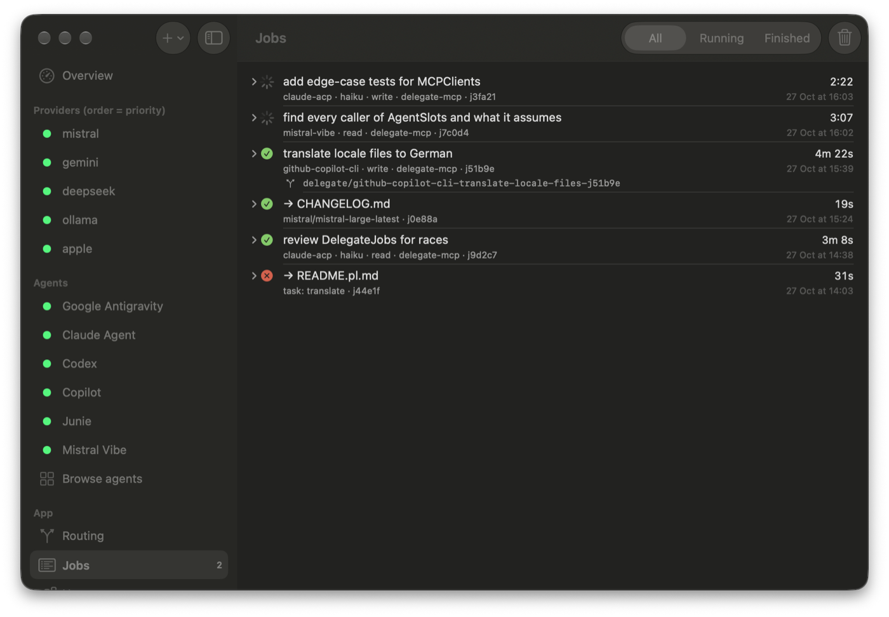
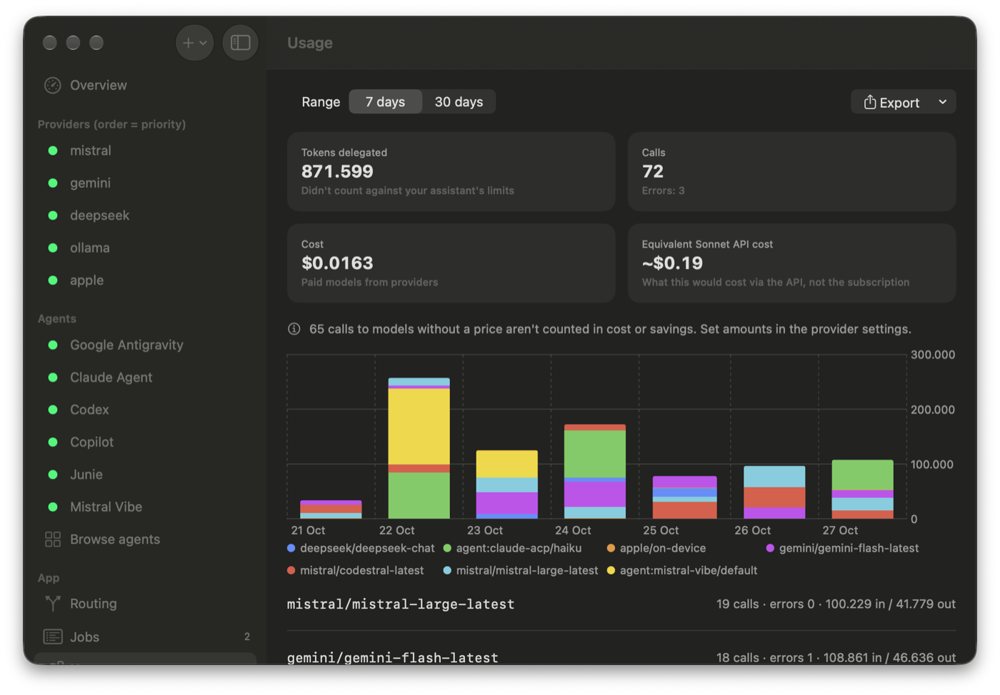
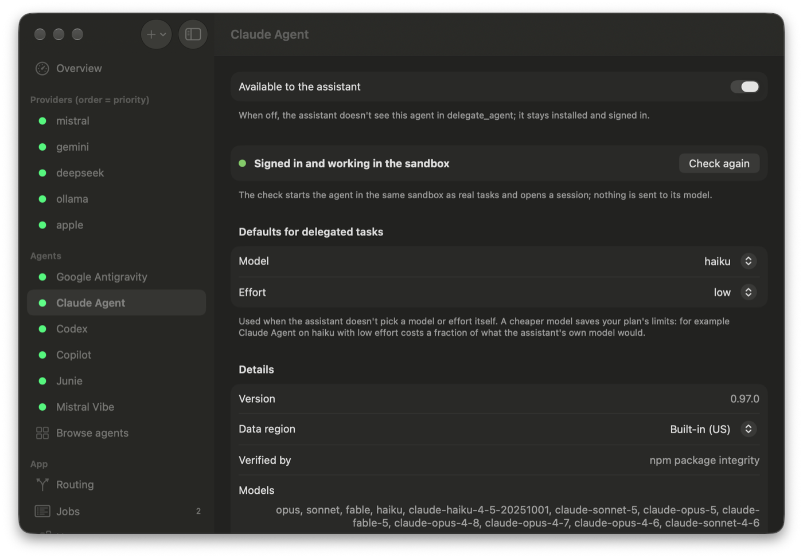
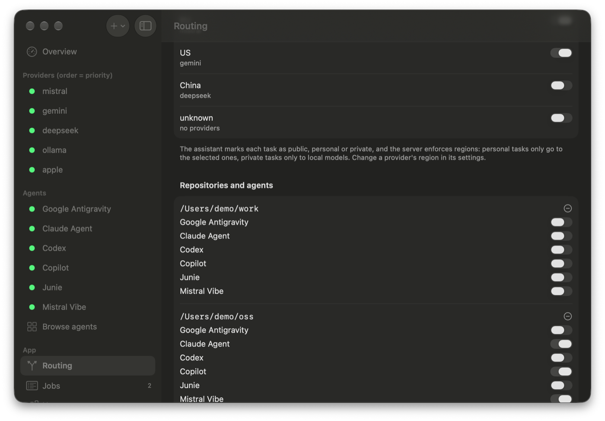
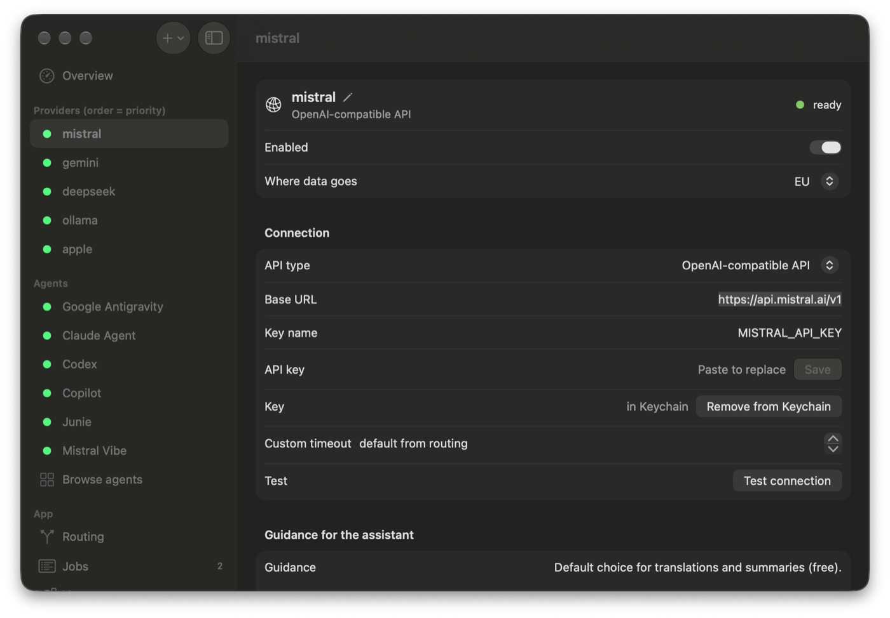

Translations, docs, tests and repo-wide searches go to cheaper or local models and to coding agents in a sandbox. Your main assistant keeps its limits for the parts that need it.
Free. Signed and notarized by Apple. Requires macOS 26.
A menu bar app for the settings, a server for your assistant. Use the arrows to look around.





Everything running in the background, from every session: which agent or model, how long, the result, and the branch an agent left its changes on.
Tokens, calls and cost per model, and what the same work would have cost on a frontier model's API.
Each agent signs in with its own account. Delegate checks it in the same sandbox real tasks use, and picks a cheaper default model for it.
Where your data may go, region by region, and which agents may work on which repository. Work code can stay off limits to all of them.
Mistral, Gemini, Groq, NVIDIA NIM, SambaNova, Cloudflare Workers AI, OpenRouter, DeepSeek, Anthropic, local Ollama or LM Studio, and Apple's on-device model. Keys live in Keychain.
Delegate is an MCP server, so your assistant sees it as a few extra tools. It decides what to hand off; the server does the file work, the routing and the bookkeeping.
Translations, docs, changelogs, fixtures, boilerplate and summaries of long logs go to a cheaper model. The server reads the input files and writes the result to disk, so your assistant doesn't pay to retype them.
Background jobs return an ID straight away. Your assistant starts a few, keeps working, and collects the results when they're ready.
Provider order is your priority list. A model that hits a rate limit, runs out of credit or goes down is paused for a while, from a minute to a week depending on the error, and the next one takes over.
Free tiers, local models through Ollama or LM Studio, and Apple's on-device model, which works offline and never leaves your Mac.
Set a limit in dollars. Once today's spend reaches it, paid models drop out and free and local ones carry on.
Before a prompt leaves your Mac, a leak detector looks for API keys, bearer tokens and cloud credentials, and stops the request if it finds one.
The /swarm skill for Claude Code splits a goal, like a roadmap item, into independent tasks, runs them in parallel on models and agents, then reviews and merges what comes back.
One click to connect Claude Desktop, Claude Code, Codex, Cursor, VS Code, Gemini CLI or Antigravity. Zed takes a short manual edit.
Written in Swift with SwiftUI. No Python, no Electron. The server ships inside the app, and a doctor command checks the whole setup.
Install agents from the ACP registry, the same one Zed uses: Claude Agent, Codex, GitHub Copilot, Mistral Vibe, Google Antigravity and Junie. Each one signs in with its own account, so its work counts against its plan, not your main assistant's.
In read mode an agent searches and analyses a snapshot of the repo.
In write mode it works on a new delegate/… branch in a
worktree; Delegate commits the result and your assistant reviews the diff
before anything is merged.
A macOS sandbox keeps your original repository, your API keys and everything outside the task out of the agent's reach.
The app writes the config for you. Restart your assistant afterwards so it loads the server's instructions.
Every provider and agent has a data region: on this Mac, EU, US, China or unknown. Your assistant marks each task as public, personal or private, and the server enforces it: personal work only goes to the regions you allow, private work never leaves your Mac.
Delegate has no account, no server of its own and no analytics. The usage log stays on your Mac and holds only counts and timings, never prompts.